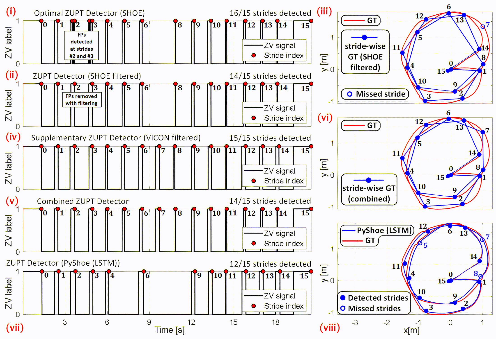

Research Projects
Click on the images for details.

Gait-driven Learning-based Inertial Odometry (GDLBIO)
Gait-driven Inertial Navigation Dataset
Adaptive ZUPT (and stride detection) for extreme fast motions - To be updated...